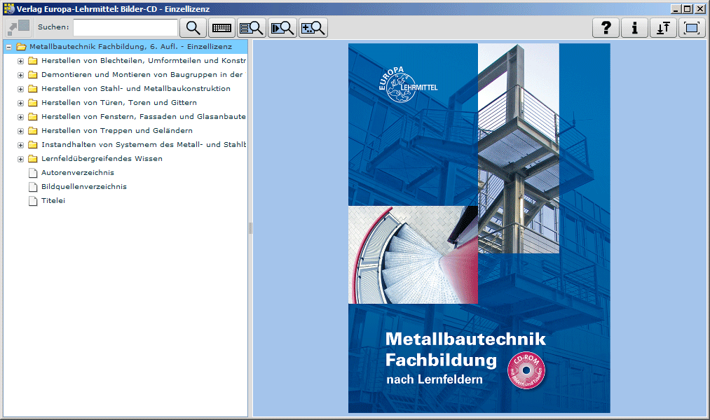
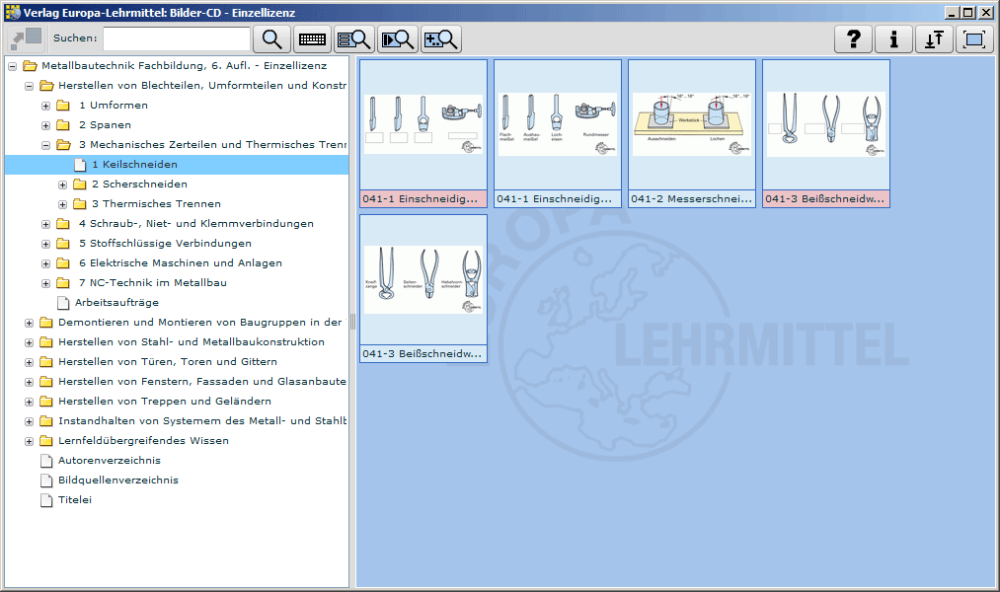
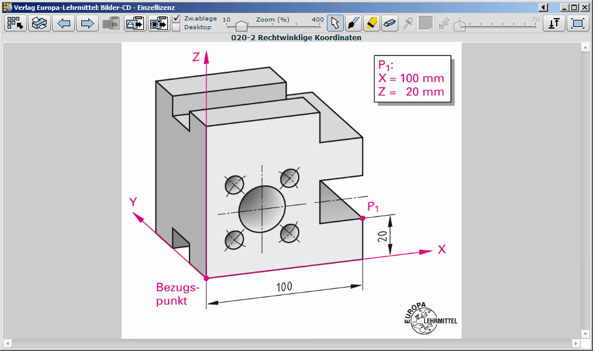
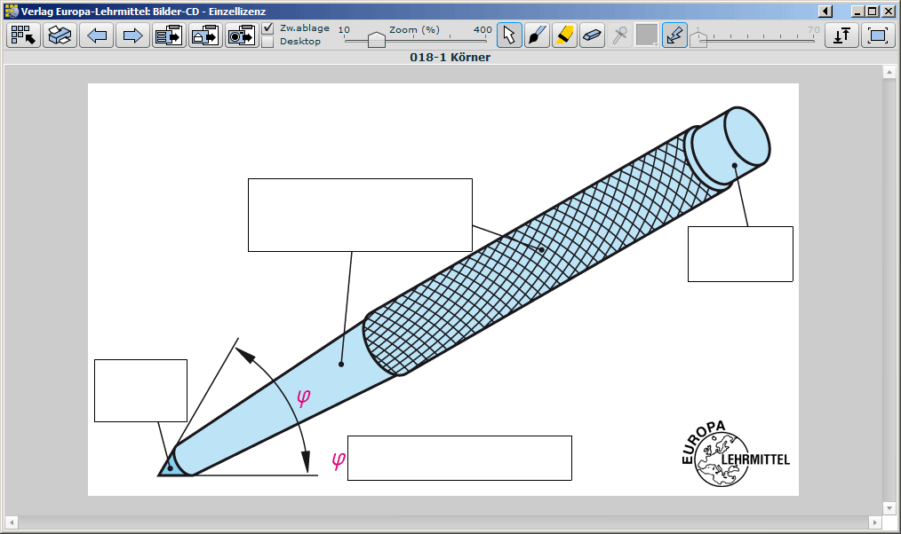
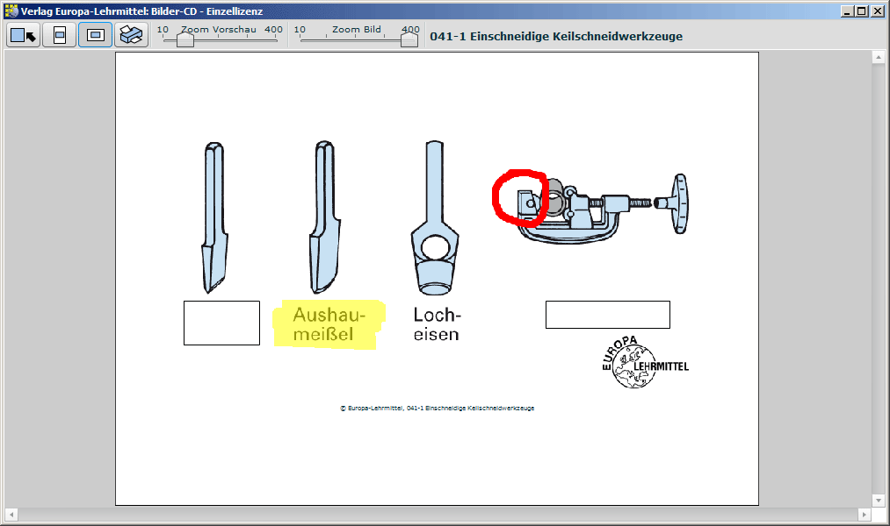

Eine Bilder-CD enthält die Bilder eines Buches. Je nach Buch finden Sie auf einer Bilder-CD auch sog. Lernbilder, welche interaktive Elemente enthalten. Diese sind beispielsweise Begriffe/Objekte zum Aufdecken, Drag&Drop-Übungen oder Animationen. Im Rahmen unserer Bestimmungen (siehe unten "Rechtliche Hinweise") können Sie in den Bildern/Lernbildern zeichnen und diese dann speichern, ausdrucken oder per Zwischenablage z.B. in PowerPoint- oder Whiteboard-Präsentationen einfügen.
Zur gezielten Suche, Anzeige und Bearbeitung der Bilder/Lernbilder gibt es auf der Bilder-CD ein Programm: Für PC lautet der Dateiname <Buchname>.exe und für Mac <Buchname>.app. PC-User können die <Buchname>.exe direkt auf der CD-ROM starten oder per setup.exe auf Ihren PC installieren. Mac-User können das Programm <Buchname>.app ebenfalls direkt auf der CD-ROM starten oder ziehen die <Buchname>.app in gewohnter Weise per Drag&Drop z.B. auf den Desktop oder Programme.
Nach dem Start einer Bilder-CD sehen Sie z.B. folgenden Bildschirm:

Der linke Bereich der Bilder-CD zeigt das Inhaltsverzeichnis des Buches. Hier können Sie Bilder entsprechend der thematischen Gliederung des Buches finden.
Sind in einem Verzeichnis Bilder enthalten, werden Vorschaubilder in der rechten Hälfte der Bilder-CD angezeigt. Die Benennung des Bildes steht unterhalb des Vorschaubildes. An der Hintergrundfarbe der Benennung können Sie die Art des Bildes erkennen:

Der vollständige Name des Vorschaubildes wird Ihnen angezeigt, wenn Sie den Mauszeiger eine Weile über das Vorschaubild halten. Arbeiten Sie an einem Touchscreen oder Whiteboard, "tappen" Sie z.B. mit Ihrem Finger neben dem Vorschaubild auf den Monitor oder Whiteboard, halten den Finger "gedrückt" und schieben den Finger auf das gewünschte Vorschaubild - daraufhin erscheint der vollständige Bildname als Tooltip. Diese Vorgehensweise können Sie übrigens bei allen interaktiven Elementen mit einem "Tooltip" (z.B. Buttons) durchführen.
Bilder zu Ihrem gewünschten Stichwort finden Sie mit Hilfe des Suchfeldes in der oberen Werkzeugleiste. Arbeiten Sie an einem Whiteboard, können Sie mit Hilfe einer Bildschirmtastatur einen Suchbegriff eingeben. Zum Einblenden der Bildschirmtastatur klicken Sie neben dem Suchbutton (Symbol Lupe) auf den Button "Bildschirmtastatur öffnen" (Symbol Tastatur). Besonderheit beim Mac: Bitte prüfen Sie, ob Ihr System die Bildschirmtastatur anzeigen kann: Systemeinstellungen -> Tastatur -> Tastatur- und Zeichenübersicht in der Menüleiste anzeigen. GGf. in "Eingabequellen" -> "Tastatur/Zeichenübersicht" anwählen.
Je nach Buch gibt es auf einer Bilder-CD auch besondere Bilder, welche z.B. interaktive Elemente oder Animationen enthalten:
| Art des Bildes | Inhalt |
| Lernbild | "Aufdecken von Begriffen/Objekten" oder "Blättern zwischen Bildzuständen" |
| Animation | "Animation" oder "Interaktive Simulation" oder "Drag&Drop Übung" |
| Externe Ressource | Verlinkungen auf externe Ressourcen, wie z.B. PDF-Dokumente oder Programme |
Je nach Existenz dieser besonderen Bilder werden Ihnen im Vorschau-Fenster neben dem Standard-Suchbutton weitere Suchbuttons angezeigt, welche mit einem Klick die gewünschten Bilder finden und anzeigen.
Ein Doppel-Klick auf ein Vorschaubild zeigt das Bild in voller Größe an.

Im folgenden finden Sie eine Erklärung der Werkzeuge in der Werkzeugleiste (von links nach rechts). Der Name des jeweiligen Werkzeuges wird beim Darüberfahren und kurzem Verweilen mit der Maus als sog. ToolTip angezeigt.
Hiermit verlassen Sie das Bild/Lernbild und gelangen wieder zum Inhaltsverzeichnis. Sie können das Bild auch mit der Taste ESC verlassen. Haben Sie in einem Bild/Lernbild gezeichnet und das vollständige Bild noch nicht gespeichert, erscheint eine Sicherheitsabfrage.
Siehe weiter unten.
Hiermit blättern Sie zwischen den Bildern eines Kapitels: Dies können Sie auch mit den Tasten BILD AUF / AB durchführen.
Neben den Speicherbuttons können Sie einstellen, wohin das Bild/Lernbild Lernbild, Bild oder ScreenShot gespeichert werden soll. Es gibt 3 Möglichkeiten:
Das in die Zwischenablage kopierte Bild oder Abbild eines Lernbildes können Sie per Tastaturkürzel (PC: Strg-V, Mac: Command-V) z.B. in Word, Powerpoint oder Grafikprogramm einfügen. Kopierte Lernbilder mit interaktiven Elementen können Sie nur in Adobe-Flash-fähige Anwendungen einfügen - wie z. B. die Präsentations-Anwendungen der Whiteboard-Hersteller Smart Technologies (SMART Notebook 10) oder Promethean (ActivInspire 1.5). Kreuzen Sie vor dem Speichern weder Zwischenablage noch Desktop an, können Sie den Speicher-Ort frei wählen.
Mit dem Zoom-Slider vergrößern oder verkleinern Sie das Bild/Lernbild. Sie können dafür auch das Scrollrad Ihrer Maus verwenden. Wenn Sie das Scrollrad einsetzen, wird das Bild an der Stelle gezoomt, wo sich Ihr Mauszeiger gerade befindet. Ein Doppel-Klick auf eine beliebige Stelle im Bild stellt den Zoom Bildschirm-füllend ein - ein Doppel-Klick auf den Zoom-Slider stellt den Zoom auf 100% (Originalgröße des Bildes) ein.
Neben dem Zoom-Slider finden Sie Zeichenfunktionen, mit denen Sie in einem Bild/Lernbild malen können:
Damit können Sie z.B. bei einer Bildvergrößerung das Bild anklicken und verschieben, ohne dafür die Scrollbalken verwenden zu müssen.
Damit malen Sie auf dem Bild. Mit einem Tastendruck auf die Leertaste wechseln Sie wieder zum Pfeil zurück und können das Bild verschieben. Ein nochmaliger Tastendruck auf die Leertaste wählt wieder den Pinsel aus.
Dieses Werkzeug funktioniert wie ein Text-Marker: Ihre gewünschte Farbe wird transparent aufgetragen, so dass die darunter liegenden Bildelemente sichtbar bleiben.
Damit können Sie Ihre Zeichnung wieder löschen. Das Originalbild oder Lernbild bleibt erhalten.
Damit nehmen Sie von einer beliebigen Stelle des Bildes den Farbwert für den Pinsel oder Marker auf. Nach dem Klick mit der Pipette auf das Bild wird Ihr zuletzt gewähltes Werkzeug wieder ausgewählt.
Mit einem Klick auf den Farbwähler können Sie aus einer Palette von Farben Ihre gewünschte Farbe für den Pinsel oder Marker auswählen. Nach Ihrer Wahl wird Ihr zuletzt ausgewähltes Werkzeug sofort wieder ausgewählt.
Bei Lernbilder gibt es interaktive Elemente, z.B. Buttons. Nach dem Öffnen eines Lernbildes können Sie die Buttons anklicken - Sie können sie Buttons aber nicht anmalen. Damit Sie die Buttons an- oder übermalen können, schalten Sie mit dem Blitz die Funktion der Lernbild-Buttons aus und wieder ein.
Neben dem Blitz können Sie mit dem Slider die Größe von Pinsel, Marker oder Radiergummi einstellen.
Dieser Button verschiebt die Werkzeugleiste nach unten oder wieder nach oben. Diese Funktion ist hilfreich für das Arbeiten an einem Whiteboard.
Dieser Button vergrößert die interaktive Bilder-CD auf Ihren gesamten Bildschirm.

Bei den "Lernbildern zum Aufdecken" können Sie abgedeckte Begriffe oder Objekte mit einem Klick anzeigen oder wieder verdecken. Bei "Lernbildern zum Blättern" oder "Lernbilder als Animation" finden Sie im Lernbild im unteren Bildbereich eine Steuerungsleiste, mit der Sie zwischen den verschiedenen Bildinhalten blättern oder die Animation abspielen können.

Die Funktion "Drucken ..." ermöglicht das Ausdrucken des vollständigen Bildes oder Lernbildes - einschließlich Ihrer Bildänderungen. Neben dem "Zurück"-Button können Sie das Blattformat "Hoch" oder "Quer" einstellen. Neben der Einstellung "Zoom-Vorschau" finden Sie den Slider "Zoom-Bild". Damit können Sie die Größe des Bildes auf dem Din-A4-Blatt vor dem Ausdruck verändern.
Verlag Europa-Lehrmittel
Nourney, Vollmer GmbH & Co. KG
Düsselberger Str. 23
42781 Haan-Gruiten
GERMANY
Telefon: 02104 6916-0
Telefax: 02104 6916-27
Hotline: 02104 6916-22
E-Mail: info@europa-lehrmittel.de
Internet: www.europa-lehrmittel.de
Produktion: www.studiow.de
Inno Setup: www.jrsoftware.org
Lehrer an allgemeinbildenden und beruflichen Schulen sowie betriebliche Ausbilder dürfen die Bilder und Lernbilder zur Erstellung von Unterrichtsmaterialien für ihren eigenen Unterricht verwenden und in Klassenstärke in Papierform vervielfältigen. Eine Weitergabe in digitaler Form oder das Veröffentlichen im Internet oder in einem Intranet sind nicht erlaubt.
Schüler dürfen die Bilder und Lernbilder im Rahmen des Schulunterrichts für die Ausarbeitung von Referaten, Power-Point-Präsentationen etc. verwenden. Eine Vervielfältigung in Papierform in der für den Unterricht notwendigen Anzahl ist erlaubt, eine digitale Weitergabe oder das Veröffentlichen im Internet oder in einem Intranet dagegen nicht.
Dozenten an Fachhochschulen und Universitäten dürfen die Bilder und Lernbilder in einem Skript verwenden, das über einen Beamer, ein Whiteboard oder Ähnliches während einer Vorlesung den Studenten präsentiert wird. Eine Vervielfältigung der Skripte ist ohne Genehmigung des Verlags nicht erlaubt. Ebenso ist eine Weitergabe in digitaler Form oder das Veröffentlichen im Internet oder in einem Intranet nicht gestattet.
In allen hier aufgeführten Fällen ist eine Quellenangabe obligatorisch.
Alle weiteren Nutzungen müssen beim Verlag schriftlich angefragt werden.
Verlag Europa-Lehrmittel